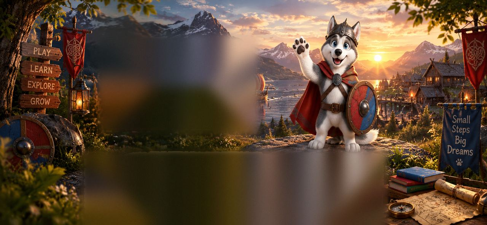

En Mastery4Kids, los niños de 6 a 12 años aprenden inglés como aprenden todo lo demás: jugando, cantando, moviéndose y creando. Cada clase es una pequeña aventura en inglés, pensada para que hablen con confianza, sin miedo a equivocarse, y quieran volver a la siguiente.
¡Comienza la aventura! Ver video
El video de Mastery4Kids llegará pronto.
En Mastery4Kids, los niños de 6 a 12 años aprenden inglés como aprenden todo lo demás: jugando, cantando, moviéndose y creando. Cada clase es una pequeña aventura en inglés, pensada para que hablen con confianza, sin miedo a equivocarse, y quieran volver a la siguiente.
Hay 5 cursos independientes, uno por nivel, cada uno con temas que crecen junto con los niños:
Cada nivel se divide en 5 subniveles, para que el avance sea paso a paso y visible para la familia.
Cada subnivel tiene 6 clases:
Al final de cada nivel hay 2 clases de repaso con un mini proyecto para celebrar lo aprendido.
Las familias reciben un feedback positivo y claro, con estrellas y medallas: lo que su hijo hace bien, lo que está practicando y su siguiente meta. Cada mes compartimos su progreso: cuánto habla en clase, su fluidez y las palabras nuevas que usa.
Pronto
Aquí compartiremos las fotos de nuestras misiones y eventos Kids.
Fichas, juegos y recursos para practicar en casa. Sección visible solo para administradores y profesores.
Cargando…